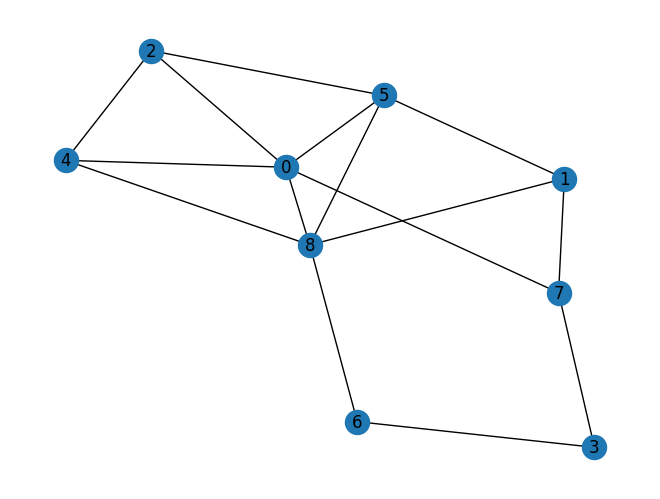

Tugas 4 Pagerank#
Buat graph berarah dengan NetworkX (minimal 9 node )
Hitung manual pagerank dari graph yang anda buat
Hitung pagerank menggunakan NetworkX
Implementasikan ulang Shakunni/Extractive-Text-Summarization
Jelaskan prosesnya
Upload di github repository webstatis masing masing
Menentukan graph dan plot#
import networkx as nx
# Create a graph
G = nx.Graph()
G.add_edges_from([(0,2),(0,4),(0,5),(1,7),(2,0),(2,4),(2,5),(3,7),(4,8),(5,1),(5,8),(6,3),(6,8),(7,0),(8,0),(8,1),(8,6)])
# draw the graph
nx.draw(G, with_labels=True)

Hitung Pagerank dengan NetworkX#
page_rank = nx.pagerank(G, alpha=0.85)
print('NetwrokX PageRank :',page_rank)
NetwrokX PageRank : {0: 0.1558998220673495, 2: 0.09777559041925096, 4: 0.09793266220277633, 5: 0.12639349288132878, 1: 0.10044924344376191, 7: 0.10540541897118083, 3: 0.07946863845888402, 8: 0.15917393983368838, 6: 0.07750119172177906}
Hitung Pagerank Manual dengan Code Python#
import numpy as np
def pagerank(M, alpha=0.85, max_iter=100, tol=1e-6):
"""
Fungsi untuk menghitung PageRank menggunakan metode iteratif dengan algoritma Power Method.
Parameter:
M (np.array): Matriks adjacency dari graf yang akan dihitung PageRank-nya.
alpha (float): Damping factor, default 0.85.
max_iter (int): Jumlah iterasi maksimum, default 100.
tol (float): Toleransi kesalahan, default 1e-6.
Return:
v (np.array): Vektor PageRank.
"""
n = M.shape[0]
v = np.ones(n) / n
M_hat = (alpha * M + (1 - alpha) / n)
for _ in range(max_iter):
v_last = v
v = M_hat @ v
if np.linalg.norm(v - v_last, 1) < tol:
break
return v
# inisialisasi matriks
n = G.number_of_nodes()
M = np.array(nx.adjacency_matrix(G).todense())
M = M / M.sum(axis=0)
# hitung pagerank
v = pagerank(M)
print('Manual PageRank :',v)
Manual PageRank : [0.15590023 0.09777579 0.09793244 0.12639312 0.10044956 0.10540472
0.07946921 0.1591743 0.07750063]
Implementasi Text Summarization in Python#
import numpy as np
import PyPDF2
import docx2txt
import sys
from nltk.tokenize.punkt import PunktSentenceTokenizer
import matplotlib.pyplot as plt
import networkx as nx
from sklearn.feature_extraction.text import TfidfTransformer, CountVectorizer
ModuleNotFoundErrorTraceback (most recent call last)
<ipython-input-6-3d52926f5104> in <cell line: 2>()
1 import numpy as np
----> 2 import PyPDF2
3 import docx2txt
4 import sys
5 from nltk.tokenize.punkt import PunktSentenceTokenizer
ModuleNotFoundError: No module named 'PyPDF2'
---------------------------------------------------------------------------
NOTE: If your import is failing due to a missing package, you can
manually install dependencies using either !pip or !apt.
To view examples of installing some common dependencies, click the
"Open Examples" button below.
---------------------------------------------------------------------------
# we are going to show an example of how the method is working
# first let's take the document as an input
def readDoc(name):
# now read the type of document
if name.lower().endswith('.txt'):
choice = 1
elif name.lower().endswith('.pdf'):
choice = 2
else:
choice = 3
# print(name)
# print(choice)
# Case 1: if it is a .txt file
if choice == 1:
f = open(name, 'r', encoding="utf8")
document = f.read()
f.close()
# Case 2: if it is a .pdf file
elif choice == 2:
pdfFileObj = open(name, 'rb', encoding="utf8")
pdfReader = PyPDF2.PdfFileReader(pdfFileObj)
pageObj = pdfReader.getPage(0)
document = pageObj.extractText()
pdfFileObj.close()
# Case 3: none of the format
else:
print('Failed to load a valid file')
print('Returning an empty string')
document = ''
# print(type(document))
return document
def tokenize(document):
# We are tokenizing using the PunktSentenceTokenizer
# we call an instance of this class as sentence_tokenizer
doc_tokenizer = PunktSentenceTokenizer()
# tokenize() method: takes our document as input and returns a list of all the sentences in the document
# sentences is a list containing each sentence of the document as an element
sentences_list = doc_tokenizer.tokenize(document)
return sentences_list
document = readDoc("berita1.txt")
sentences_list = tokenize(document)
print('The legnth of the document is: ', end='')
print(len(document))
The legnth of the document is: 2169
# let us print the size of memory used by the list sentences
print('The size of the list in Bytes is: {}'.format(
sys.getsizeof(sentences_list)))
# the size of one of the element of the list
print('The size of the item 0 in Bytes is: {}'.format(
sys.getsizeof(sentences_list[0])))
The size of the list in Bytes is: 208
The size of the item 0 in Bytes is: 165
print('The size of the list "sentences" is: {}'.format(len(sentences_list)))
The size of the list "sentences" is: 19
for i in sentences_list:
print(i)
Provinsi Lampung kini ramai dibicarakan usai kritikan dari pemilik akun TikTok @awbimaxreborn viral di media sosial.
Kritikan itu membuat heboh karena pemilik akun itu menyebut Lampung sebagai Dajjal.
Pemilik akun bernama Bima Yudho Saputro dalam unggahannya mengungkapkan beberapa alasan mengkritik kampung halamannya itu.
Salah satunya terkait infrastruktur terbatas dan banyaknya proyek pemerintah yang mangkrak.
"Contohnya Kota Baru, itu dari jaman gue SD sampai sekarang gue nggak pernah dengar kabarnya lagi.
Itu aliran dana dari pemerintah pusat ratusan miliar ya bestie dan gue nggak tahu tuh sekarang udah jadi tempat jin buang anak kali," ucap Bima.
"Gue sering bahas jalan karena jalan itu kayak infrastruktur yang paling umum dan untuk mobilisasi ekonomi di Lampung, tapi jalan-jalan di Lampung tuh kayak 1 km bagus, 1 km rusak, terus jalan ditempel-tempel doang, ini apa sih, ini pemerintah main ular tangga atau apa," sambungnya lagi.
Melansir detikFinance, Lampung yang kini menjadi sorotan karena jalan rusak itu ternyata hanya menganggarkan dana senilai Rp 72.445.048.520 (Rp 72,44 miliar) untuk pemeliharaan jalan.
Hal ini diketahui dari Peraturan Gubernur Lampung No.
38 Tahun 2022 Pasal 16 bagian (d).
Padahal dalam Pasal 8 Pergub yang sama, dijelaskan bahwa anggaran belanja daerah tahun anggaran 2023 prov.
Lampung direncanakan sebesar Rp 7.381.761.189.686 (Rp 7,38 triliun).
Artinya Pemprov.
Lampung hanya mengalokasikan 0,98% anggaran belanja daerahnya untuk keperluan perbaikan jalan.
Itu pun dananya tidak sepenuhnya digunakan untuk pemeliharaan jalan saja, namun juga digunakan untuk pemeliharaan jaringan dan irigasi.
Sementara itu untuk 2023 ini Pemprov Lampung telah mengalokasikan sebagian besar anggaran belanjanya untuk keperluan operasional pegawai.
Dalam Pasal 9 Ayat (2) disebutkan bahwa belanja pegawai sebagaimana dimaksud direncanakan sebesar Rp 2.145.054.774.646,42 (Rp 2,14 triliun).
Dengan demikian, Lampung mampu menganggarkan Rp 2,14 triliun untuk gaji dan tunjangan PNS-DPRD atau setara dengan 29,05% dari total belanja daerah mereka.
Sedangkan dana untuk perbaikan jalan hanya dialokasikan sebanyak Rp 72,44 miliar.
cv = CountVectorizer()
cv_matrix = cv.fit_transform(sentences_list)
# a demo of what CountVectorizer().fit_transform(text) does
cv_demo = CountVectorizer() # a demo object of class CountVectorizer
# I have repeated the words to make a non-ambiguous array of the document text matrix
text_demo = ["Ashish is good, you are bad", "I am not bad"]
res_demo = cv_demo.fit_transform(text_demo)
print('Result demo array is {}'.format(res_demo.toarray()))
# Result is 2-d matrix containing document text matrix
# Notice that in the second row, there is 2.
# also, bad is repeated twice in that sentence.
# so we can infer that 2 is corresponding to the word 'bad'
print('Feature list: {}'.format(cv_demo.get_feature_names()))
Result demo array is [[0 1 1 1 1 1 0 1]
[1 0 0 1 0 0 1 0]]
Feature list: ['am', 'are', 'ashish', 'bad', 'good', 'is', 'not', 'you']
c:\Users\Dio\AppData\Local\Programs\Python\Python39\lib\site-packages\sklearn\utils\deprecation.py:87: FutureWarning: Function get_feature_names is deprecated; get_feature_names is deprecated in 1.0 and will be removed in 1.2. Please use get_feature_names_out instead.
warnings.warn(msg, category=FutureWarning)
# printing the cv_matrix type
# and how it is being stored in memory?
# it is stored in the compressed row format
# compressed row format:
print('The data type of bow matrix {}'.format(type(cv_matrix)))
print('Shape of the matrix {}'.format(cv_matrix.get_shape))
print('Size of the matrix is: {}'.format(sys.getsizeof(cv_matrix)))
print(cv.get_feature_names())
print(cv_matrix.toarray())
The data type of bow matrix <class 'scipy.sparse._csr.csr_matrix'>
Shape of the matrix <bound method spmatrix.get_shape of <19x193 sparse matrix of type '<class 'numpy.int64'>'
with 290 stored elements in Compressed Sparse Row format>>
Size of the matrix is: 48
['048', '05', '054', '14', '145', '16', '189', '2022', '2023', '29', '38', '381', '42', '44', '445', '520', '646', '686', '72', '761', '774', '98', 'akun', 'alasan', 'aliran', 'anak', 'anggaran', 'apa', 'artinya', 'atau', 'awbimaxreborn', 'ayat', 'bagian', 'bagus', 'bahas', 'bahwa', 'banyaknya', 'baru', 'beberapa', 'belanja', 'belanjanya', 'bernama', 'besar', 'bestie', 'bima', 'buang', 'contohnya', 'daerah', 'daerahnya', 'dajjal', 'dalam', 'dan', 'dana', 'dananya', 'dari', 'demikian', 'dengan', 'dengar', 'detikfinance', 'di', 'dialokasikan', 'dibicarakan', 'digunakan', 'dijelaskan', 'diketahui', 'dimaksud', 'direncanakan', 'disebutkan', 'ditempel', 'doang', 'dprd', 'ekonomi', 'gaji', 'gubernur', 'gue', 'hal', 'halamannya', 'hanya', 'heboh', 'infrastruktur', 'ini', 'irigasi', 'itu', 'jadi', 'jalan', 'jaman', 'jaringan', 'jin', 'juga', 'kabarnya', 'kali', 'kampung', 'karena', 'kayak', 'keperluan', 'kini', 'km', 'kota', 'kritikan', 'lagi', 'lampung', 'main', 'mampu', 'mangkrak', 'media', 'melansir', 'membuat', 'mengalokasikan', 'menganggarkan', 'mengkritik', 'mengungkapkan', 'menjadi', 'menyebut', 'mereka', 'miliar', 'mobilisasi', 'namun', 'nggak', 'no', 'operasional', 'padahal', 'paling', 'pasal', 'pegawai', 'pemeliharaan', 'pemerintah', 'pemilik', 'pemprov', 'peraturan', 'perbaikan', 'pergub', 'pernah', 'pns', 'prov', 'provinsi', 'proyek', 'pun', 'pusat', 'ramai', 'ratusan', 'rp', 'rusak', 'saja', 'salah', 'sama', 'sambungnya', 'sampai', 'saputro', 'satunya', 'sd', 'sebagai', 'sebagaimana', 'sebagian', 'sebanyak', 'sebesar', 'sedangkan', 'sekarang', 'sementara', 'senilai', 'sepenuhnya', 'sering', 'setara', 'sih', 'sorotan', 'sosial', 'tahu', 'tahun', 'tangga', 'tapi', 'telah', 'tempat', 'tempel', 'terbatas', 'terkait', 'ternyata', 'terus', 'tidak', 'tiktok', 'total', 'triliun', 'tuh', 'tunjangan', 'ucap', 'udah', 'ular', 'umum', 'unggahannya', 'untuk', 'usai', 'viral', 'ya', 'yang', 'yudho']
[[0 0 0 ... 0 0 0]
[0 0 0 ... 0 0 0]
[0 0 0 ... 0 0 1]
...
[0 0 1 ... 0 0 0]
[0 1 0 ... 0 0 0]
[0 0 0 ... 0 0 0]]
normal_matrix = TfidfTransformer().fit_transform(cv_matrix)
res_graph = normal_matrix * normal_matrix.T
print(normal_matrix.toarray())
# plt.spy(res_graph)
[[0. 0. 0. ... 0. 0. 0. ]
[0. 0. 0. ... 0. 0. 0. ]
[0. 0. 0. ... 0. 0. 0.27800354]
...
[0. 0. 0.24236455 ... 0. 0. 0. ]
[0. 0.217391 0. ... 0. 0. 0. ]
[0. 0. 0. ... 0. 0. 0. ]]
nx_graph = nx.from_scipy_sparse_array(res_graph)
ranks = nx.pagerank(nx_graph)
sentence_array = sorted(((ranks[i], s) for i, s in enumerate(sentences_list)), reverse=True)
sentence_array = np.asarray(sentence_array)
rank_max = float(sentence_array[0][0])
rank_min = float(sentence_array[len(sentence_array) - 1][0])
print('rank max :',rank_max)
print('rank min :',rank_min)
temp_array = []
# if all sentences have equal ranks, means they are all the same
# taking any sentence will give the summary, say the first sentence
flag = 0
if rank_max - rank_min == 0:
temp_array.append(0)
flag = 1
# If the sentence has different ranks
if flag != 1:
for i in range(0, len(sentence_array)):
temp_array.append((float(sentence_array[i][0]) - rank_min) / (rank_max - rank_min))
threshold = (sum(temp_array) / len(temp_array)) + 0.2
sentence_list = []
if len(temp_array) > 1:
for i in range(0, len(temp_array)):
if temp_array[i] > threshold:
sentence_list.append(sentence_array[i][1])
else:
sentence_list.append(sentence_array[0][1])
print(len(temp_array))
rank max : 0.06880698646516402
rank min : 0.04295776214872579
19
# summary = " ".join(str(x) for x in sentence_list)
# print(summary)
for i in sentence_list:
print(i)
Melansir detikFinance, Lampung yang kini menjadi sorotan karena jalan rusak itu ternyata hanya menganggarkan dana senilai Rp 72.445.048.520 (Rp 72,44 miliar) untuk pemeliharaan jalan.
Sementara itu untuk 2023 ini Pemprov Lampung telah mengalokasikan sebagian besar anggaran belanjanya untuk keperluan operasional pegawai.
Lampung hanya mengalokasikan 0,98% anggaran belanja daerahnya untuk keperluan perbaikan jalan.
"Gue sering bahas jalan karena jalan itu kayak infrastruktur yang paling umum dan untuk mobilisasi ekonomi di Lampung, tapi jalan-jalan di Lampung tuh kayak 1 km bagus, 1 km rusak, terus jalan ditempel-tempel doang, ini apa sih, ini pemerintah main ular tangga atau apa," sambungnya lagi.
Sedangkan dana untuk perbaikan jalan hanya dialokasikan sebanyak Rp 72,44 miliar.